CH 7.3 – Ellipses
In the definition of a circle, we fixed a point called the center and considered all of the points which were a fixed distance \(r\) from that one point. For our next conic section, the ellipse, we fix two distinct points and a distance \(d\) to use in our definition.
Definition of an Ellipse
Given two distinct points \(F_1\) and \(F_2\) in the plane and a fixed distance \(d\), an ellipse is the set of all points \((x, y)\) in the plane such that the sum of each of the distances from \(F_1\) and \(F_2\) to \((x, y)\) is \(d\). The points \(F_1\) and \(F_2\) are called the foci, of which the singular would be focus.
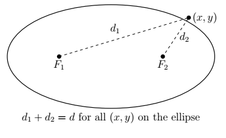
We may imagine taking a length of string and anchoring it to two points on a piece of paper. The curve traced out by taking a pencil and moving it so the string is always taut is an ellipse.
The center of the ellipse is the midpoint of the line segment connecting the two foci. The major axis of the ellipse is the line segment connecting two opposite ends of the ellipse which also contains the center and foci. The minor axis of the ellipse is the line segment connecting two opposite ends of the ellipse which contains the center but is perpendicular to the major axis. The vertices of an ellipse are the points of the ellipse which lie on the major axis. Notice that the center is also the midpoint of the major axis, hence it is the midpoint of the vertices. In pictures we have,
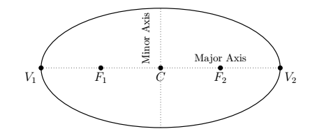
Note that the major axis is the longer of the two axes through the center, and likewise, the minor axis is the shorter of the two. In order to derive the standard equation of an ellipse, we assume that the ellipse has its center at \((0,0)\), its major axis along the \(x\)-axis, and has foci \((c,0)\) and \((-c,0)\) and vertices \((-a,0)\) and \((a,0)\). We will label the \(y\)-intercepts of the ellipse as \((0,b)\) and \((0,-b)\). (We assume \(a\), \(b\), and \(c\) are all positive numbers.) Schematically,
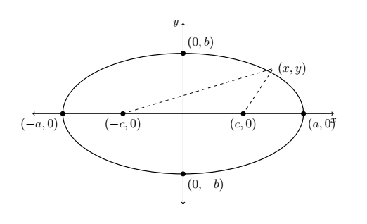
Note that since \((a,0)\) is on the ellipse, it must satisfy the conditions of the definition of an ellipse. That is, the distance from \((-c,0)\) to \((a,0)\) plus the distance from \((c,0)\) to \((a,0)\) must equal the fixed distance \(d\). But, all of this is if the ellipse is centered at the origin. That is not always the case, just like with circles.
Standard Equation of an Ellipse
For positive unequal numbers \(a\) and \(b\), the equation of an ellipse with center \((h,k)\) is:
Horizontal Major Axis
\(\dfrac{(x-h)^2}{a^2} + \dfrac{(y-k)^2}{b^2} = 1\)
Vertices: \((h \pm a,\ k)\)
Foci: \((h \pm c,\ k)\)
Where \(c^2 = a^2 - b^2\)
Vertical Major Axis
\(\dfrac{(x-h)^2}{b^2} + \dfrac{(y-k)^2}{a^2} = 1\)
Vertices: \((h,\ k \pm a)\)
Foci: \((h,\ k \pm c)\)
Where \(c^2 = a^2 - b^2\)
Note: '\(a\)' will always be the larger number in an ellipse.
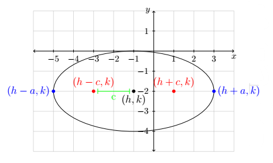
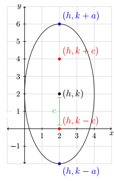
It is important to note that regardless of whether the major axis is horizontal or vertical, the distance between the vertices is always \(2a\), and the short distance across the ellipse that passes through the center is always \(2b\). This can roughly be broken down to suggest that the length from the center \((h,k)\) to one vertex is \(a\).
Example
- Graph \(\dfrac{(x+1)^2}{9} + \dfrac{(y-2)^2}{25} = 1\). Find the center, the lines which contain the major and minor axes, the vertices, the endpoints of the minor axis, and the foci.
- Find the equation of the ellipse with foci \((2,1)\) and \((4,1)\) and vertex \((0,1)\).
Solution
1. We see that this equation is in the standard form. Here \(x - h\) is \(x + 1\) so \(h = -1\), and \(y - k\) is \(y - 2\) so \(k = 2\). Hence, our ellipse is centered at \((-1, 2)\). We see that \(a^2 = 9\) so \(a = 3\), and \(b^2 = 25\) so \(b = 5\). This means that we move \(3\) units left and right from the center and \(5\) units up and down from the center to arrive at points on the ellipse. As an aid to sketching, we draw a rectangle matching this description, called a guide rectangle, and sketch the ellipse inside this rectangle as seen below on the left.
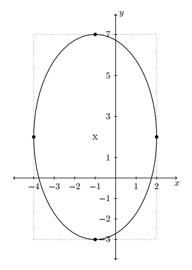
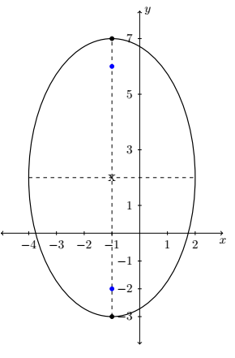
Since we moved farther in the \(y\) direction than in the \(x\) direction, the major axis will lie along the vertical line \(x = -1\), which means the minor axis lies along the horizontal line \(y = 2\). The vertices are the points on the ellipse which lie along the major axis so in this case, they are the points \((-1, 7)\) and \((-1, -3)\), and the endpoints of the minor axis are \((-4, 2)\) and \((2, 2)\). (Notice these points are the four points we used to draw the guide rectangle.) To find the foci, we find \(c = \sqrt{25 - 9} = \sqrt{16} = 4\), which means the foci lie \(4\) units from the center. Since the major axis is vertical, the foci lie \(4\) units above and below the center, at \((-1, -2)\) and \((-1, 6)\). Plotting all this information gives the graph seen above on the right.
2. Plotting the data given to us, we have
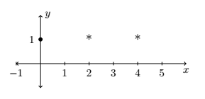
From this sketch, we know that the major axis is horizontal, meaning \(a > b\). Since the center is the midpoint of the foci, we know it is \((3, 1)\). Since one vertex is \((0, 1)\) we have that \(a = 3\), so \(a^2 = 9\). All that remains is to find \(b^2\). Since the foci are \(1\) unit away from the center, we know \(c = 1\). Since \(a > b\), we have \(c = \sqrt{a^2 - b^2}\), or \(1 = \sqrt{9 - b^2}\), so \(b^2 = 8\). Substituting all of our findings into the equation \(\dfrac{(x-h)^2}{a^2} + \dfrac{(y-k)^2}{b^2} = 1\), we get our final answer to be
\[ \frac{(x-3)^2}{9} + \frac{(y-1)^2}{8} = 1 \]As with circles and parabolas, an equation may be given which is an ellipse, but isn't in standard form. In those cases, as with circles and parabolas before, we will need to massage the given equation into the standard form.
To Write the Equation of an Ellipse in Standard Form
- Group the same variables together on one side of the equation and position the constant on the other side.
- Complete the square in both variables as needed.
- Divide both sides by the constant term so that the constant on the other side of the equation becomes \(1\).
Example
Graph \(x^2 + 4y^2 - 2x + 24y + 33 = 0\). Find the center, the lines which contain the major and minor axes, the vertices, the endpoints of the minor axis, and the foci.
Solution
Since we have a sum of squares and the squared terms have unequal coefficients, it's a good bet we have an ellipse on our hands. We need to complete both squares, and then divide, if necessary, to get the right-hand side equal to \(1\).
\[ \begin{array}{rclr} x^2 + 4y^2 - 2x + 24y + 33 &=& 0 & \\[6pt] x^2 - 2x + 4y^2 + 24y &=& -33 & \\[6pt] x^2 - 2x + 4\left(y^2 + 6y\right) &=& -33 & \\[6pt] \left(x^2 - 2x + 1\right) + 4\left(y^2 + 6y + 9\right) &=& -33 + 1 + 4(9) & \\[6pt] (x-1)^2 + 4(y+3)^2 &=& 4 & \\[10pt] \dfrac{(x-1)^2 + 4(y+3)^2}{4} &=& \dfrac{4}{4} & \\[10pt] \dfrac{(x-1)^2}{4} + (y+3)^2 &=& 1 & \\[10pt] \dfrac{(x-1)^2}{4} + \dfrac{(y+3)^2}{1} &=& 1 & \end{array} \]Now that this equation is in standard form, we see that \(x - h\) is \(x - 1\) so \(h = 1\), and \(y - k\) is \(y + 3\) so \(k = -3\). Hence, our ellipse is centered at \((1, -3)\). We see that \(a^2 = 4\) so \(a = 2\), and \(b^2 = 1\) so \(b = 1\). This means we move \(2\) units left and right from the center and \(1\) unit up and down from the center to arrive at points on the ellipse. Since we moved farther in the \(x\) direction than in the \(y\) direction, the major axis will lie along the horizontal line \(y = -3\), which means the minor axis lies along the vertical line \(x = 1\).
The vertices are the points on the ellipse which lie along the major axis so in this case, they are the points \((-1, -3)\) and \((3, -3)\), and the endpoints of the minor axis are \((1, -2)\) and \((1, -4)\). To find the foci, we find \(c = \sqrt{4 - 1} = \sqrt{3}\), which means the foci lie \(\sqrt{3}\) units from the center. Since the major axis is horizontal, the foci lie \(\sqrt{3}\) units to the left and right of the center, at \((1 - \sqrt{3},\ -3)\) and \((1 + \sqrt{3},\ -3)\). Plotting all of this information gives

As you come across ellipses in the homework exercises and in the wild, you'll notice they come in all shapes and sizes. Compare the two ellipses below.
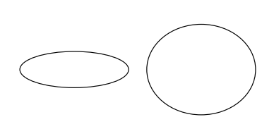
Certainly, one ellipse is more round than the other. This notion of "roundness" is quantified below.
Eccentricity of an Ellipse
The eccentricity of an ellipse, denoted \(e\), is the following ratio:
\[ e = \frac{\text{distance from the center to a focus}}{\text{distance from the center to a vertex}} \]In an ellipse, the foci are closer to the center than the vertices, so \(0 < e < 1\). The ellipse above on the left has eccentricity \(e \approx 0.98\); for the ellipse above on the right, \(e \approx 0.66\). In general, the closer the eccentricity is to \(0\), the more "circular" the ellipse; the closer the eccentricity is to \(1\), the more "eccentric" the ellipse.
Example
Find the equation of the ellipse whose vertices are \((\pm 5, 0)\) with eccentricity \(e = \dfrac{1}{4}\).
Solution
As before, we plot the data given to us.
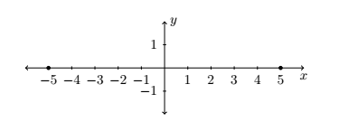
From this sketch, we know that the major axis is horizontal, meaning \(a > b\). With the vertices located at \((\pm 5, 0)\), we get \(a = 5\) so \(a^2 = 25\). We also know that the center is \((0, 0)\) because the center is the midpoint of the vertices. All that remains is to find \(b^2\). To that end, we use the fact that the eccentricity \(e = \dfrac{1}{4}\) which means
\[ e = \frac{\text{distance from the center to a focus}}{\text{distance from the center to a vertex}} = \frac{c}{a} = \frac{c}{5} = \frac{1}{4} \]from which we get \(c = \dfrac{5}{4}\). To get \(b^2\), we use the fact that \(c = \sqrt{a^2 - b^2}\), so \(\dfrac{5}{4} = \sqrt{25 - b^2}\) from which we get \(b^2 = \dfrac{375}{16}\). Substituting all of our findings into the equation \(\dfrac{(x-h)^2}{a^2} + \dfrac{(y-k)^2}{b^2} = 1\), yields our final answer
\[ \frac{x^2}{25} + \frac{16y^2}{375} = 1 \]As with parabolas, ellipses have a reflective property. If we imagine the dashed lines below representing sound waves, then the waves emanating from one focus reflect off the top of the ellipse and head towards the other focus.
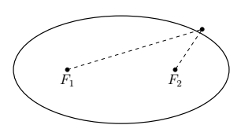
Such geometry is exploited in the construction of so-called "Whispering Galleries." If a person whispers at one focus, a person standing at the other focus will hear the first person as if they were standing right next to them. We explore the Whispering Galleries in our last example.
Example
Jamie and Jason want to exchange secrets (terrible secrets) from across a crowded whispering gallery. Recall that a whispering gallery is a room which, in cross section, is half of an ellipse. If the room is \(40\) feet high at the center and \(100\) feet wide at the floor, how far from the outer wall should each of them stand so that they will be positioned at the foci of the ellipse?
Solution
Graphing the data yields
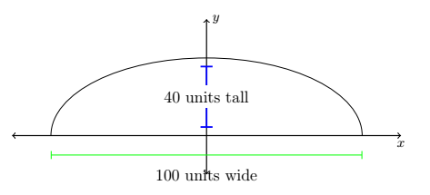
It's most convenient to imagine this ellipse centered at \((0, 0)\). Since the ellipse is \(100\) units wide and \(40\) units tall, we get \(a = 50\) and \(b = 40\). Hence, our ellipse has the equation
\[ \frac{x^2}{50^2} + \frac{y^2}{40^2} = 1 \]We're looking for the foci, and we get \(c = \sqrt{50^2 - 40^2} = \sqrt{900} = 30\), so that the foci are \(30\) units from the center. That means they are \(50 - 30 = 20\) units from the vertices. Hence, Jason and Jamie should stand \(20\) feet from opposite ends of the gallery.
Exercises
Exercises to be added at a later date.